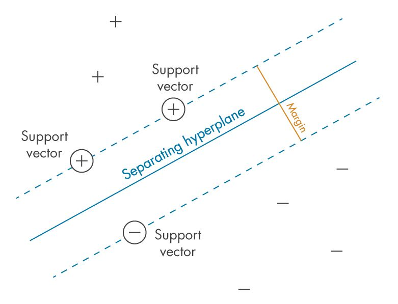

Project 5: Hierarchical Clustering and SVM: Conceptual Design and Analysis
Introduction
Building and implementing the solution is currently not planned. Therefore only the background, scope, deliverables, high-level design and process parts are documented as part of this introduction page. The solution may be implemented at a later stage..
Background
The goal is to build a solution that implements a combintation of Hierarchical Clustering (unsupervised learning) and Support Vector Machines SVM (supervised learning).
Hierarchical clustering is an unsupervised learning technique used to group data points based on their similarity. This algorithm builds a hierarchy of clusters by either merging smaller clusters (agglomerative approach) or splitting larger clusters (divisive approach). The resulting clusters are visualized as a dendrogram, where each branch represents a cluster. The method is widely used in exploratory data analysis to reveal natural groupings in the data without requiring predefined cluster numbers. On this picture you can see how hierrarchical clustering clusters the elements A-F in a dendogram (right image):
Support Vector Machines (SVMs) on the other hand are supervised learning models used for classification and regression tasks.
- Separating Hyperplane: The hyperplane is the decision boundary that separates the data points into different classes (e.g., "+" and "-"). The objective of the SVM is to find the hyperplane that best divides the classes while maximizing the margin.
- Margin: The margin is the distance between the separating hyperplane and the closest data points from each class. The larger the margin, the better the generalization of the model.
- Support Vectors: These are the data points that lie closest to the separating hyperplane. They are critical in defining the hyperplane and margin, as the SVM uses only these points to determine the optimal decision boundary.
This image illustrates the key concepts of SVM in a classification scenario:
Scope
Building a hybrid machine learning application combining unsupervised and supervised learning techniques to achieve and enhnaced classification solution. Hierarchical clustering (unsupervised learning) will be used in the first step to identify natural groupings within the learning data, and the resulting cluster labels will be used as additional features for a supervised SVM classifier that predicts the final classes.
Deliverables (High-Level Scope)
- A clustering machine learning module that performs hierarchical clustering.
- Automated augmentation of the existing dataset by incorporating cluster labels as a feature for classification.
- An SVM model that uses the augmented dataset to classify based on the original features and the cluster result.
- Evaluation of the pipeline's effectiveness using classification metrics and cluster validation metrics.
Out of Scope
- Real-time predictions or deployment of the solution (focus is on model training and evaluation).
- Advanced clustering methods like DBSCAN or Gaussian Mixture Models (limited to hierarchical clustering).
- Sophisticated feature engineering beyond the integration of cluster labels.
- Advanced error handling beyond basic input data validation checks.
High-Level Design

- The (1) Data Store is responsible for storing the datasets. Initially, it requires a clean clustering learning dataset as well as a clean SVM learning dataset with classes.
- The (2) Clustering Model Builder is the layer responsible for building the hierarchical clustering model (unsupervised learning) based on the clean clustering learning dataset.
- The (4) ML Model is stored together with all relevant parameters for its usage.
- The (5) Clustering Model Use layer is responsible for running the clustering algorithm on the clean SVM learning dataset (class is removed for this step). It will send the cluster predictions to the Dataset Augmentation.
- The (7) Dataset Augmentation is responsible for creating the augmented dataset required to train the SVM algorithm.
- The (1) Data Store is used to store the augmented dataset.
- The (3) SVM Model Builder layer is responsible for building the SVM model based on the augmented dataset.
- The (4) ML Model is stored together with all relevant parameters for its usage.
- The (1) Data Store requires a clean prediction dataset without classes.
- The (5) Clustering Model Use is used to create clustering predictions based on the clean prediction dataset without classes.
- The (7) Dataset Augmentation is responsible for creating the augmented dataset required to run the SVM model prediction.
- The (6) SVM Model Use layer is responsible for running the final SVM predictions against the augmented dataset including the clustering result. It will provide the final predictions.
Process for setting up the environment:
Process for usage of the Environment: